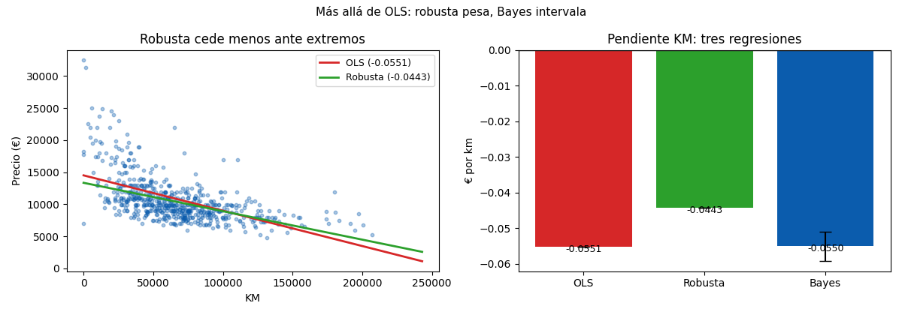

Anexo · Contenido extra · Lección 0027
Más allá de OLS: GLM, robusta y bayesiana
Win de hoy: generalizar OLS en 3 direcciones: GLM Gamma-log (respeta precio > 0), robusta (−0,055 → −0,044) y bayesiana (−0,055 ± 0,002).
1 · GLM: familia + link (precios que no bajan de 0)
Un GLM elige familia de error y link: Gamma con log dice “precio > 0 y varianza que crece con la media”. OLS extrapolado a 270 mil km predice precio negativo; Gamma-log, jamás. Resultado honesto: CV-RMSE 1.978 vs 1.871 de OLS — acá OLS gana en puntos, pero GLM gana en sentido (y brilla con conteos, proporciones y varianzas raras).
sm.GLM(y, X, family=sm.families.Gamma(sm.families.links.log())).fit()2 · Robusta: pesar menos a los extremos (−0,044)
OLS eleva errores al cuadrado: un extremo grita y la recta obedece. La robusta de Huber pesa menos a los que se alejan: pendiente KM −0,044 vs −0,055 OLS (20 % más suave). Es “OLS con oídos tapados ante gritos”: ideal con outliers que no querés borrar (regla 0004) ni dejar mandar.
3 · Bayesiana: coeficientes con intervalo (−0,055 ± 0,002)
La regresión bayesiana trata cada coeficiente como distribución: combina prior (lo que creías) con datos y entrega intervalo creíble directo: P(−0,059 < β_KM < −0,051) = 95 %. Bonus teórico: Ridge (0021) es Bayes con prior gaussiano — Ridge y Bayes eran la misma colina.
4 · Usos de la regresión (y cierre)
- Predecir: tasar el próximo Corolla que entre (0003, 0024).
- Explicar: “10 mil km ≈ −456 €, aislado” (0024–0025).
- Controlar: comparar precios a igual edad/peso (parcial, 0025).
- Simular: ¿y si baja 20 mil km? (what-if con la fórmula).
5 · Figura: tres pendientes

Regenerar la figura (mismo resultado versionado en assets/img/toyota/):
python scripts/make_figures.py --only glm-robusta-bayesiana6 · Quiz (auto-chequeo inmediato)
7 · Fuente primaria y cierre
Para profundizar (1 fuente): Hastie, Tibshirani & Friedman, The Elements of Statistical Learning — capítulos de GLM y métodos lineales extendidos (ElemStatLearn, PDF libre; también en RESOURCES.md del curso).
¿Algo no quedó claro? Preguntame al agente: elegir familia y link, robusta vs borrar outliers, o prior vs Ridge. Esa pregunta vale más que releer.